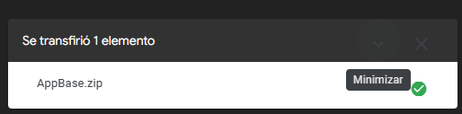
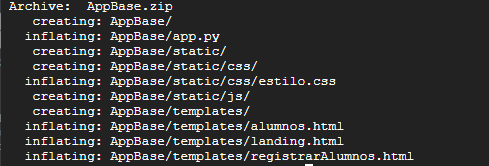
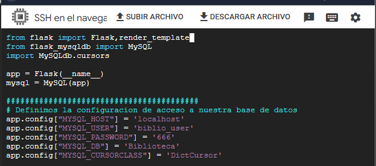
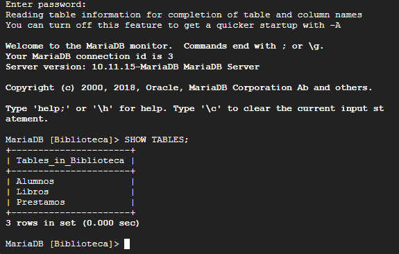
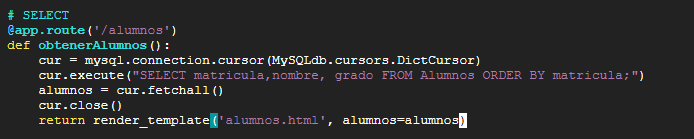
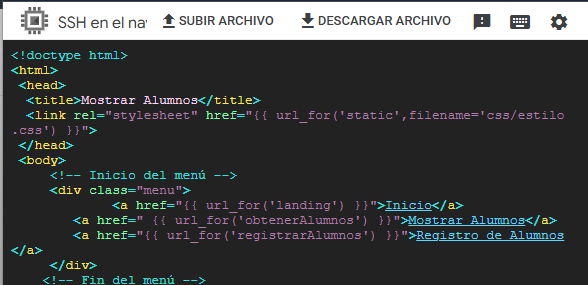
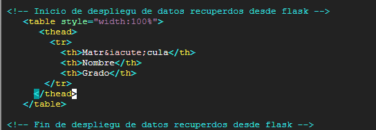
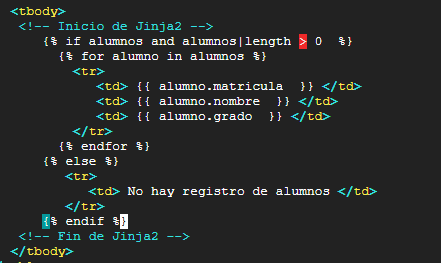
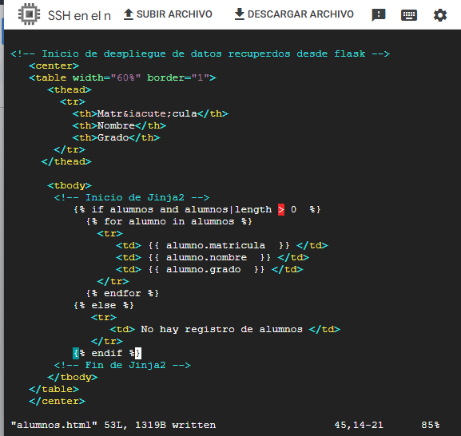

🎯 Objetivo de la actividad
Descargar y ejecutar un proyecto base de Flask (AppBase), integrarlo con MariaDB y crear la ruta
/alumnos para consultar registros con DictCursor. Finalmente, mostrar los datos
en una plantilla HTML con Jinja recorriendo filas en una tabla.
⬇️ Preparación de AppBase
Se subió AppBase.zip a la VM y se preparó para trabajar en el directorio de proyectos.

Figura 1: Transferencia de AppBase.zip a la máquina virtual.
mv AppBase Proyectos/
sudo dnf install unzip -y
unzip AppBase.zip
Figura 2: Estructura extraída de AppBase con app.py, templates y static.
▶️ Primera ejecución y estructura
chmod 700 AppBase -R
tree AppBase
export FLASK_APP=app.py
flask run --host=0.0.0.0Con esta ejecución se valida que AppBase arranca correctamente y presenta menú en la vista principal.
🔐 Configuración de conexión a MariaDB
Se agregaron importaciones, conexión y parámetros de acceso en app.py.

Figura 3: Integración de flask_mysqldb y variables de configuración.

Figura 4: Verificación de tablas existentes dentro de la base Biblioteca.
🧾 Ruta /alumnos con DictCursor
Después de validar la consulta SQL en MariaDB, se implementó la ruta para traer alumnos ordenados por matrícula.
@app.route('/alumnos')
def obtenerAlumnos():
cur = mysql.connection.cursor(MySQLdb.cursors.DictCursor)
cur.execute("SELECT matricula, nombre, grado FROM Alumnos ORDER BY matricula;")
alumnos = cur.fetchall()
cur.close()
return render_template('alumnos.html', alumnos=alumnos)
Figura 5: Implementación de /alumnos usando cursor tipo diccionario.
🧩 Edición de plantilla alumnos.html
Se ajustó el menú y la estructura de tabla para mostrar los datos recibidos desde Flask.

Figura 6: Encabezado de plantilla con enlaces y estilos estáticos.

Figura 7: Construcción de encabezados para matrícula, nombre y grado.

Figura 8: Bucle Jinja para iterar registros y renderizar cada fila.

Figura 9: Vista de la tabla final en la plantilla alumnos.html.
📘 Aprendizajes
Gestión de proyecto base
Se practicó carga, permisos y descompresión de un proyecto Flask listo para extender.
Datos dinámicos en Flask
Se consolidó el flujo completo consulta SQL → cursor → plantilla con renderizado dinámico.
Uso de Jinja en tablas
Se utilizó for, condicionales y variables de contexto para desplegar resultados de forma clara.